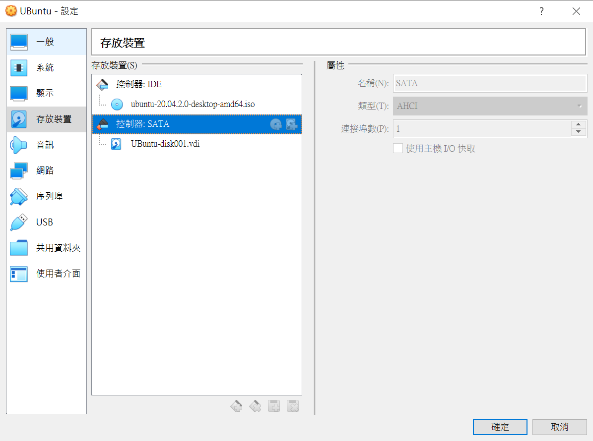
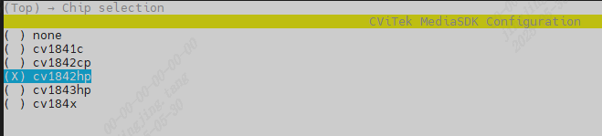
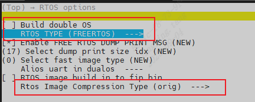
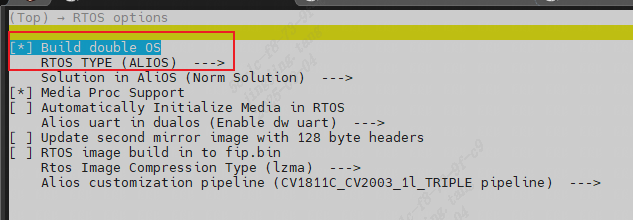
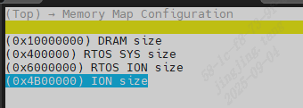

2. Build the CVITEK Software Compilation Environment¶
2.1. Linux servicethe corresponding content¶
the corresponding contentselectuse：
Ubuntu OScomputer
Windows OScomputer + Virtualbox VM (the corresponding contentRunUbuntu)
the corresponding content，the corresponding contentinstallthe corresponding contentUbuntu 20.04 LTSVersion。
Virtualbox VM the corresponding content: https://www.virtualbox.org/wiki/Downloads
Ubuntu 20.04 LTSthe corresponding content: https://releases.ubuntu.com/focal/ubuntu-20.04.6-desktop-amd64.iso
2.1.1. the corresponding contentVirtualBoxVMinstallUbuntu¶
the corresponding contentVM，the corresponding content

the corresponding content8GBthe corresponding contentVMuse。

the corresponding content200GBthe corresponding contentspace，the corresponding contentSDKthe corresponding content。

2.1.2. Ubuntu the corresponding content¶
the corresponding contentneedthe corresponding contentinstallthe corresponding contentISOthe corresponding content

the corresponding contentinstall

the corresponding contentVirtualBox Host-only Ethernet Adapterthe corresponding contentHostthe corresponding contentVirtualBoxthe corresponding content（the corresponding contentserviceandthe corresponding content）

2.1.3. installSSH Server¶
SSH Serverinstall
sudo apt-get install ssh
sudo apt-get install openssh-server
installthe corresponding contentcanmodifythe corresponding content ssh the corresponding content, the corresponding contentport、the corresponding content、rootthe corresponding content
vim /etc/ssh/sshd_config
Port 22
PasswordAuthentication yes
PermitRootLogin yes -> YesNothe corresponding content root the corresponding content
modifythe corresponding contentSSH
sudo /etc/init.d/ssh restart
2.1.4. installSamba Server¶
Ubuntu VBneedinstallSambathe corresponding content，the corresponding contentHost PCthe corresponding content。
installSambathe corresponding content，the corresponding contentifconfigGetIP Address，the corresponding contentinstallthe corresponding contentnet-toolSupported，needinstallnet-tool
sudo apt install net-tools
sudo apt-get install samba samba-common
the corresponding contentsamba the corresponding content
sudo smbpasswd -a cvitek
modify/etc/samba/smb.conf，increasethe corresponding contentContent
[cvitek]
path = /home/cvitek
writable = yes
browseable= yes
valid users = cvitek
startsamba server
sudo service smbd restart
WINDOW PCthe corresponding contentconnectionSamba server （<Server IP>）

the corresponding content 2.2. installCVITEK Build Environmentthe corresponding content。
2.2. the corresponding contentCompilation Environment¶
the corresponding contentSDKthe corresponding content，Ubuntuneedinstallthe corresponding content：
sudo apt-get update
sudo apt-get install -y build-essential
sudo apt-get install -y ninja-build
sudo apt-get install -y automake
sudo apt-get install -y autoconf
sudo apt-get install -y libtool
sudo apt-get install -y wget
sudo apt-get install -y curl
sudo apt-get install -y git
sudo apt-get install -y gcc
sudo apt-get install -y libssl-dev
sudo apt-get install -y bc
sudo apt-get install -y slib
sudo apt-get install -y squashfs-tools
sudo apt-get install -y android-sdk-libsparse-utils
sudo apt-get install -y android-sdk-ext4-utils
sudo apt-get install -y jq
sudo apt-get install -y cmake
sudo apt-get install -y python3-distutils
sudo apt-get install -y tclsh
sudo apt-get install -y scons
sudo apt-get install -y parallel
sudo apt-get install -y ssh-client
sudo apt-get install -y tree
sudo apt-get install -y python3-dev
sudo apt-get install -y python3-pip
sudo apt-get install -y device-tree-compiler
sudo apt-get install -y libssl-dev
sudo apt-get install -y ssh
sudo apt-get install -y cpio
sudo apt-get install -y squashfs-tools
sudo apt-get install -y fakeroot
sudo apt-get install -y libncurses5
sudo apt-get install -y flex
sudo apt-get install -y bison
sudo apt-get install -y pkg-config
sudo pip3 install -U yoctools
Note
NoteCheck python CommandYesNothe corresponding content，ifthe corresponding content，needCreatethe corresponding contentconnectionthe corresponding content python3 Command。
sudo ln -s /usr/bin/python3 /usr/bin/python
2.2.1. use Docker the corresponding content¶
canthe corresponding content SDK the corresponding contentdockerthe corresponding content，the corresponding contentRunthe corresponding contentCommand，ifthe corresponding contentCompilation Environmentthe corresponding content，canusethe corresponding content。
the corresponding content Dockerfile，the corresponding contentContentSavethe corresponding contentFile cvitek-linux-Dockerfile
# the corresponding contentuse ubuntu:20.04 FROM ubuntu:20.04 ENV DEBIAN_FRONTEND=noninteractive ENV TZ=Asia/Shanghai # installthe corresponding content RUN apt-get update \ && apt-get install -y \ pkg-config RUN DEBIAN_FRONTEND=noninteractive apt-get install -y \ build-essential \ ninja-build \ automake \ autoconf \ libtool \ wget \ curl \ git \ gcc \ libssl-dev \ bc \ slib \ squashfs-tools \ android-sdk-libsparse-utils \ android-sdk-ext4-utils \ jq \ cmake \ python3-distutils \ tclsh \ scons \ parallel \ ssh-client \ tree \ python3-dev \ python3-pip \ device-tree-compiler \ libssl-dev \ ssh \ cpio \ squashfs-tools \ fakeroot \ libncurses5 \ flex \ bison \ rsync \ && apt-get clean \ && rm -rf /var/lib/apt/lists/* # the corresponding content yoctools，the corresponding content alios need RUN ln -s /usr/bin/python3 /usr/bin/python RUN pip3 install yoctools -U # Setthe corresponding contentContents WORKDIR /cvitek-sdk # Setthe corresponding content VOLUME ["/cvitek-sdk"] CMD ["/bin/bash"]
the corresponding contentgeneratedockerthe corresponding content
docker build -t cvitek-linux -f cvitek-linux-Dockerfile .
Get SDK the corresponding contentFilethe corresponding content /data/xxx/SDK/ the corresponding content（the corresponding contentDescription），startthe corresponding content：
docker run -it --name cvitek-linux \ -v /data/xxx/SDK:/cvitek-sdk \ cvitek-linux
2.3. Configurationgithubthe corresponding content¶
the corresponding contentgithubthe corresponding content，the corresponding contentConfigurationthe corresponding contentssh key，the corresponding contentneedthe corresponding contentgithubthe corresponding content
Setthe corresponding content
git config --global user.name "your_name" git config --global user.email "your_email@example.com"
Configurationthe corresponding content
ssh-keygen -t ed25519 -C "your_email@example.com" cat ~/.ssh/id_ed25519.pub
3.the corresponding contentgithub

4.VerificationsshYesNoConfigurationSuccess
ssh -T git@github.com
2.4. Get SDK the corresponding content¶
usegitthe corresponding contentgithubthe corresponding contentSDKthe corresponding content，the corresponding content：https://github.com/sophgo/sophpi
git clone -b sg200x-evb git@github.com:sophgo/sophpi.git ./sophpi/scripts/repo_clone.sh --gitclone sophpi/scripts/subtree_cv184x-v6.x.xml
2.5. Filethe corresponding content¶
SDKFilethe corresponding contentDescriptionas follows:
top
├── build ## the corresponding content
| └── media
| └── SensorSupportList ## sensor Driver
├── fsbl ## First Stage Boot Loader
├── host-tools ## the corresponding contenttoolthe corresponding content
├── isp_tuning ## isp tuningtool
├── linux_5.10 ## linuxthe corresponding content
├── cvi_mpi ## the corresponding contentispthe corresponding content
├── osal ## operationSystemthe corresponding content
├── osdrv ## kernel space Driver
├── oss ## the corresponding content
├── ramdisk ## ram disk
├── u-boot-2021.10 ## uboot
├── libsophon ## tputhe corresponding contenttpuDriver
├── cvi_rtsp ## the corresponding contenthalthe corresponding content
├── buildroot-2021.05 ## Buildroot
├── isp-tool-daemon ## ispDebugging Tool
├── cvi_alios ## AliOS
├── freertos ## FreeRTOS
├── rt-thread ## RT-Thread
└── tdl_sdk ## AI Models SDK
2.6. the corresponding content¶
2.6.1. environmentthe corresponding contentDescription¶
the corresponding contentmainlyYesthe corresponding contentSetthe corresponding contentenvironmentthe corresponding content：$CHIP, $BOARD, $DUAL_OS
$CHIP the corresponding contentYesneedthe corresponding contentUserthe corresponding content SOC the corresponding contentSet。
$BOARD the corresponding contentYesthe corresponding content EVB, the corresponding contentDriver，the corresponding contentSet。
$DUAL_OS the corresponding contentYesthe corresponding contentUserneedthe corresponding content EVB Runthe corresponding contentSystemthe corresponding contentSystem，the corresponding content EVB the corresponding contentdefaultthe corresponding contentConfiguration，canthrough menuconfig Commandswitch。the corresponding contentSystemthe corresponding contentDescriptionthe corresponding content the corresponding contentSystemthe corresponding contentSystemthe corresponding content。
2.6.2. SDK the corresponding content¶
the corresponding contentdockerenvironmentthe corresponding content
source build/envsetup_soc.sh # Initializeenvironment
defconfig cv1842hp_wevb_0014a_spinor # the corresponding content，cv184xthe corresponding contentSupportedthe corresponding contentEVBthe corresponding contentConfigurationthe corresponding content $CHIP_$BOARD
clean_all # the corresponding contentFile
build_all # the corresponding content
the corresponding contentsource CommandInitializeenvironmentthe corresponding content，canthroughexport Commandthe corresponding contentSetas followsenvironmentthe corresponding content：
export ENABLE_BOOTLOGO=y # Configurationlogo.jpgthe corresponding contentenvironmentthe corresponding content
export TPU_REL=1 # the corresponding contenttdl_sdk SDKthe corresponding content
the corresponding content install/soc_$CHIP_$BOARD the corresponding content。
the corresponding content：
the corresponding content：needthe corresponding contentSupportedthe corresponding content
$ clean_uboot && build_uboot # the corresponding contentuboot，the corresponding contentfip.binthe corresponding contentfip_spl.bin
$ clean_kernel && build_kernel # the corresponding contentkernel，the corresponding contentboot.spinor
$ clean_osdrv && build_osdrv && pack_rootfs # the corresponding contentosdrv，generatethe corresponding contentsystem/*，the corresponding contentrootfs.spinor
$ clean_middleware && build_middleware && pack_rootfs # the corresponding contentcvi_mpi(cvi_test / sample_dsi)，generatethe corresponding contentsystem/*，the corresponding contentrootfs.spinor
$ clean_libsophon && build_libsophon # the corresponding contentlibsophon，generatethe corresponding contentlibsophon/build/*
$ clean_tdl_sdk && build_tdl_sdk # the corresponding contenttdl_sdk
the corresponding content cvi_mpi：build_middleware the corresponding contentSensor driver（the corresponding contentcvi_mpi/component/isp/ the corresponding content）andsample application（the corresponding contentcvi_mpi/sample/the corresponding content）the corresponding content
the corresponding contentFile System：pack_rootfsthe corresponding contentdriverandapplicationthe corresponding contentBurningthe corresponding content。
2.7. Build Configuration¶
Initializeafterward，the corresponding contentPathas follows，the corresponding contentcv1842hp_wevb_0014a_spinorthe corresponding content
$ cat build/boards/cv184x/cv1842hp_wevb_0014a_spinor/cv1842hp_wevb_0014a_spinor_defconfig
CONFIG_CHIP_cv1842hp=y
CONFIG_BOARD_wevb_0014a_spinor=y
CONFIG_DDR_CFG_ddr3_2133_x16=y
CONFIG_ARCH="arm"
CONFIG_CC_OPTIMIZE_FOR_SIZE=y
CONFIG_KERNEL_ENTRY_HACK=y
CONFIG_TOOLCHAIN_MUSL_ARM=y
CONFIG_FLASH_SIZE_SHRINK=y
CONFIG_BOOT_IMAGE_SINGLE_DTB=y
CONFIG_STORAGE_TYPE_spinor=y
......
CONFIG_DUAL_OS=y
CONFIG_ENABLE_ALIOS=y
CONFIG_RTOS_BUILD_IN_FIP=n
# Memory Map Configuration
CONFIG_DRAM_SIZE=0x10000000
......
#
# Partition Configuration
#
CONFIG_PARTITION_COUNT=8
......
canthroughdefconfigthe corresponding contentCV184xthe corresponding contentSupportedthe corresponding contentEVB the corresponding content，thenthe corresponding contentEVB。
$ defconfig cv184x
* cv184x * the avaliable cvitek EVB boards
cv184x - cv184x_fpga [FPGA]
cv184x_palladium [PALLADIUM]
cv184x_palladium_c906 [PALLADIUM_c906]
cv1841c - cv1841c_wevb_0015a_emmc [CA53 + EMMC + QFN SIP 128MB]
cv1841c_wevb_0015a_spinand [CA53 + SPINAND + QFN SIP 128MB]
cv1841c_wevb_0015a_spinor [CA53 + SPINOR + QFN SIP 128MB]
cv1842cp - cv1842cp_wevb_0015a_spinand [CA53 + SPINAND + QFN SIP 256MB]
cv1842cp_wevb_0015a_spinor [CA53 + SPINOR + QFN SIP 256MB]
cv1842hp - cv1842hp_wevb_0014a_emmc [CA53 + EMMC + BGA SIP 256MB]
cv1842hp_wevb_0014a_spinand [CA53 + SPINAND + BGA SIP 256MB]
cv1842hp_wevb_0014a_spinor [CA53 + SPINOR + BGA SIP 256MB]
cv1843hp - cv1843hp_wevb_0014a_emmc [CA53 + EMMC + BGA SIP 512MB]
the corresponding contentIntroductionthe corresponding contentBuild Configuration。
usecommand line - setconfig the corresponding content
$ setconfig ARCH=arm
$ setconfig CROSS_COMPILE_KERNEL=arm-none-linux-musleabihf-
$ setconfig TOOLCHAIN_MUSL_ARM=y
the corresponding contentMenuconfigthe corresponding content
Initializeafterward，the corresponding contentmenuconfigthe corresponding contentpage，the corresponding contentselectthe corresponding contentSDKthe corresponding content，containCHIP，EVBthe corresponding content，DUAL_OSthe corresponding content。

Configurationthe corresponding contentcanthe corresponding content[Enter] [Space] [ESC] the corresponding contentSet/returnthe corresponding content
Configurationthe corresponding content, the corresponding content[S]the corresponding contentConfigurationFile, the corresponding content[Q]the corresponding contentFigurethe corresponding contentInterface
(orthe corresponding content ESC, the corresponding contentautomaticthe corresponding contentYesNoneedthe corresponding contentFigurethe corresponding content)
the corresponding contentIC （the corresponding contentcv1842cpthe corresponding content）

EVB the corresponding contentselect，the corresponding contentEVBthe corresponding contentimageAdaptationthe corresponding contentDDRandFlash Size。（the corresponding contentEVBthe corresponding contentDDRthe corresponding contentDDR3，Flashthe corresponding content16MBthe corresponding contentSPINOR Flash）

the corresponding contentselectthe corresponding content（the corresponding content./build/.config），the corresponding contentcompleteSDKthe corresponding content。
2.7.1. Single-System or Dual-System Build Configuration¶
CV184X the corresponding contentYesthe corresponding contentProcessor，the corresponding contentYesthe corresponding contentARMArchitecturethe corresponding contentProcessor，the corresponding contentYesthe corresponding contentRISC-VArchitecturethe corresponding contentProcessor。
the corresponding contentSystemYesthe corresponding contentFunctionRequirementsthe corresponding content，mainlythe corresponding contentusethe corresponding content。 - the corresponding contentSystemConfigurationthe corresponding content，the corresponding contentRun Linux System，the corresponding contentRun FreeRTOS the corresponding content RT-Thread System（v6.3.0afterwarddefaultYesRT-Thread）。 - the corresponding contentSystemConfigurationthe corresponding content，the corresponding contentRun Linux System，the corresponding contentRun AliOS System。
through setconfig Commandthe corresponding content，the corresponding contentSystemthe corresponding content：
# select RT-Thread System
$ setconfig DUAL_OS=n RTOS_COMPRESS_ORIG=y
Run setconfig function
Loaded configuration '.config'
Configuration saved to '.confi'
...
# select FreeRTOS System
$ setconfig DUAL_OS=n ENABLE_FREERTOS=y
Run setconfig function
Loaded configuration '.config'
Configuration saved to '.confi'
...
the corresponding contentSystemthe corresponding content：
# default AliOS System
$ setconfig DUAL_OS=y
Run setconfig function
Loaded configuration '.config'
Configuration saved to '.confi'
...
the corresponding content menuconfig Commandthe corresponding contentmenuthe corresponding contentselect，the corresponding contentSystemthe corresponding content：


the corresponding contentSystemthe corresponding content：

2.7.2. Toolchain Switching¶
CV184x the corresponding contentArchthe corresponding contenttoolthe corresponding content：
Arch |
Libc |
Toolchain |
Target Platform |
|---|---|---|---|
Arm |
glibc |
arm-gnu-toolchain-11.3.rel1-x86_64-arm-none-linux-gnueabihf |
arm-none-linux-gnueabihf |
Arm |
musl |
arm-gnu-toolchain-11.3.rel1-x86_64-arm-none-linux-musleabihf |
arm-none-linux-musleabihf |
Aarch64 |
glibc |
arm-gnu-toolchain-11.3.rel1-x86_64-aarch64-none-linux-gnu |
aarch64-none-linux-gnu |
Linuxthe corresponding contentcanthroughConfigurationas followsthe corresponding content，the corresponding contentswitchthe corresponding contenttoolthe corresponding content：
arm glibc
$ setconfig ARCH=arm
$ setconfig CROSS_COMPILE_KERNEL=arm-none-linux-gnueabihf-
$ setconfig TOOLCHAIN_GLIBC_ARM=y
arm musl
$ setconfig ARCH=arm
$ setconfig CROSS_COMPILE_KERNEL=arm-none-linux-musleabihf-
$ setconfig TOOLCHAIN_MUSL_ARM=y
aarch64 glibc
$ setconfig ARCH=arm64
$ setconfig CROSS_COMPILE_KERNEL=aarch64-none-linux-gnu-
$ setconfig TOOLCHAIN_GLIBC_ARM64=y
the corresponding contentuseImagethe corresponding contentinterfaceConfiguration。
U-bootuseaarch64-none-linux-gnu-toolthe corresponding content。
AliOSusethe corresponding contenttoolthe corresponding contentXuantie-900-gcc-elf-newlib-x86_64-V2.6.1
2.7.3. modifyPartition¶
the corresponding content CV184x Flash Partition ToolUser Guide - the corresponding content Partitionmodify
2.7.4. Memory Mapping Configuration¶
2.7.4.1. memorythe corresponding content¶
memorythe corresponding contentBasicthe corresponding contentas followsFigurethe corresponding content。
MONITOR：ATFthe corresponding contentusememory，Includesbl31the corresponding contentbl32
RTOS_SYS_TOTAL：the corresponding contentusememory，ifusealiosthe corresponding contentSystem，RTOS_SYS_TOTAL_SIZE=Sizethe corresponding contentmemory+RTOS_SYS_SIZE；usefreertos，the corresponding contentRTOS_SYS_TOTAL_SIZE=RTOS_SYS_SIZE。KERNEL：KERNELSystemmemory,KERNEL_ENTRY_HACK
ION：the corresponding contentIONDriverusethe corresponding contentmemory
RTOS_ION：the corresponding contentIONusethe corresponding contentmemory

usepythonthe corresponding content（memmap.py）the corresponding contentADDRthe corresponding contentSIZE，the corresponding contentmemmap.pygeneratethe corresponding contentcvi_board_memmap.*Filethe corresponding contentlinux、u-boot、fsblthe corresponding contentuse。
$ cat build/boards/default/memmap/memmap.py
import os
SIZE_1M = 0x100000
SIZE_1K = 1024
# Only attributes in class MemoryMap are generated to .h
class MemoryMap:
# No prefix "CVIMMAP_" for the items in _no_prefix[]
_no_prefix = [
"CONFIG_SYS_TEXT_BASE" # u-boot's CONFIG_SYS_TEXT_BASE is used without CPP.
]
DRAM_BASE = 0x80000000
DRAM_SIZE = 510 * SIZE_1M
......
cvi_board_memmap.h
$ cat build/output/cv1842hp_wevb_0014a_spinor/cvi_board_memmap.h
#ifndef __BOARD_MMAP__a149c034__
#define __BOARD_MMAP__a149c034__
#define CONFIG_SYS_TEXT_BASE 0x83800000 /* offset 56.0MiB */
......
cvi_board_memmap.conf
$ cat build/output/cv1842hp_wevb_0014a_spinor/cvi_board_memmap.conf
CONFIG_SYS_TEXT_BASE=0x83800000
CVIMMAP_ATF_SIZE=0xa0000
CVIMMAP_BOOTLOGO_ADDR=0x89e3e000
CVIMMAP_BOOTLOGO_SIZE=0x1c2000
......
cvi_board_memmap.ld
$ cat build/output/cv1842hp_wevb_0014a_spinor/cvi_board_memmap.ld
CONFIG_SYS_TEXT_BASE = 0x83800000;
CVIMMAP_ATF_SIZE = 0xa0000;
CVIMMAP_BOOTLOGO_ADDR = 0x89e3e000;
CVIMMAP_BOOTLOGO_SIZE = 0x1c2000;
CVIMMAP_CONFIG_SYS_INIT_SP_ADDR = 0x83500000;
......
cvi_board_memmap.txt
$ cat build/output/cv1842hp_wevb_0014a_spinor/cvi_board_memmap.txt
FBSL stage:
| Name | Start Address | End Address | Size | Size(M/K/B) |
|--------------------|---------------|-------------|-----------|-------------|
......
the corresponding contentEVB the corresponding contentmemorythe corresponding content，mainlythe corresponding contentSystemthe corresponding contentusethe corresponding content。
the corresponding content，the corresponding contentmainlythe corresponding contentADDRthe corresponding contentSIZEthe corresponding contentSetthe corresponding content，Default Valuethe corresponding contentEVB defconfigFilethe corresponding content（v6.3.0the corresponding content，the corresponding content）。 the corresponding contentgeneratecvi_board_memmap.*Filethe corresponding content，ReadConfigurationFilethe corresponding content。
$ cat build/boards/cv184x/cv1842hp_wevb_0014a_spinor/cv1842hp_wevb_0014a_spinor_defconfig
......
CONFIG_DUAL_OS=y
CONFIG_ENABLE_ALIOS=y
CONFIG_RTOS_BUILD_IN_FIP=n
CONFIG_DRAM_SIZE=0x10000000
CONFIG_ION_SIZE=0x4B00000
CONFIG_RTOS_SYS_SIZE=0x400000
CONFIG_RTOS_ION_SIZE=0x6000000
......
2.7.4.2. memorythe corresponding contentmodify¶
throughmenuconfigFigurethe corresponding contentmenuinterfacecanmodifythe corresponding contentADDRthe corresponding contentSIZE，the corresponding contentRequirements。
